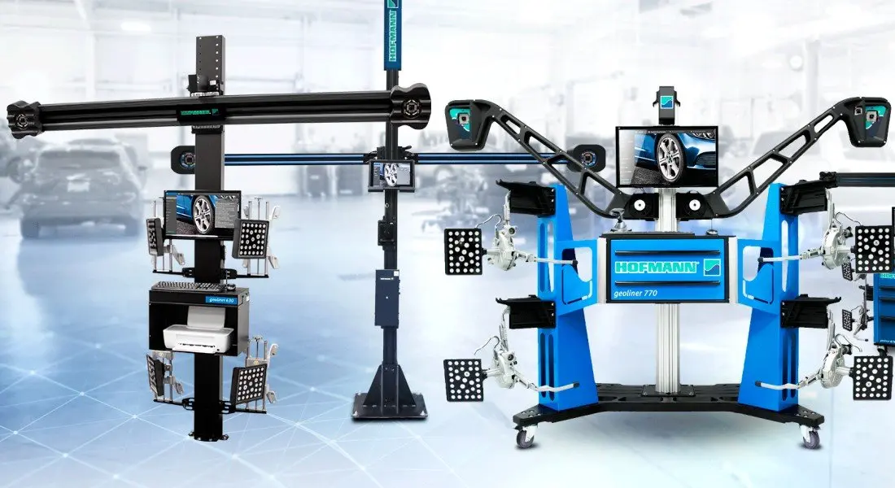

En el mundo automotriz, la precisión lo es todo. Y si hablamos de alineación de vehículos, trabajar con datos desactualizados es un riesgo enorme.
¿Querés conocer nuestras alineadoras?
Descubrí la tecnología que podemos ofrecerte. Equipos profesionales, precisos y confiables para tu taller.
Ver AlineadorasLas alineadoras Hofmann y John Bean, ambas marcas de Snap-on, son equipos de altísima tecnología que permiten realizar mediciones exactas de ángulos de dirección y suspensión. Sin embargo, su precisión depende en gran parte de la base de datos interna que utilizan.
⚠️ El riesgo de trabajar con bases de datos viejas
Cada año, los fabricantes de autos lanzan nuevos modelos, modifican plataformas y ajustan parámetros críticos de alineación: ángulos de avance, caída, convergencia, track width, altura, peso…
Si tu alineadora no está actualizada, podés enfrentarte a varios problemas:
- Mediciones incorrectas. Los valores de referencia no coinciden con las especificaciones reales del vehículo.
- Vehículos mal alineados. Lo que genera desgaste prematuro de neumáticos, problemas en la dirección y reclamos de clientes.
- Pérdida de confianza. Un cliente con problemas de conducción después de una alineación es un cliente que probablemente no vuelva.
✔️ Trivium Center te ayuda a mantener tu alineadora al día
En Trivium Center realizamos actualizaciones de software para alineadoras Hofmann y John Bean, asegurándote:
✅ Bases de datos actualizadas con los modelos más recientes.
✅ Parámetros originales de fábrica.
✅ Compatibilidad y buen funcionamiento del equipo.
✅ Soporte técnico especializado.
No importa si tu alineadora es Hofmann o John Bean: ambas pueden actualizarse gracias a que pertenecen al grupo Snap-on y comparten tecnología de software.
¡No pierdas clientes por una base de datos vieja!
Si hace tiempo que no actualizás tu alineadora, es momento de hacerlo. Vas a ofrecer un servicio más profesional, evitar reclamos y prolongar la vida útil de tus equipos.
¿Querés actualizar tu alineadora?
Escribinos por WhatsApp y te asesoramos sin compromiso.
💬 Escribir por WhatsApp